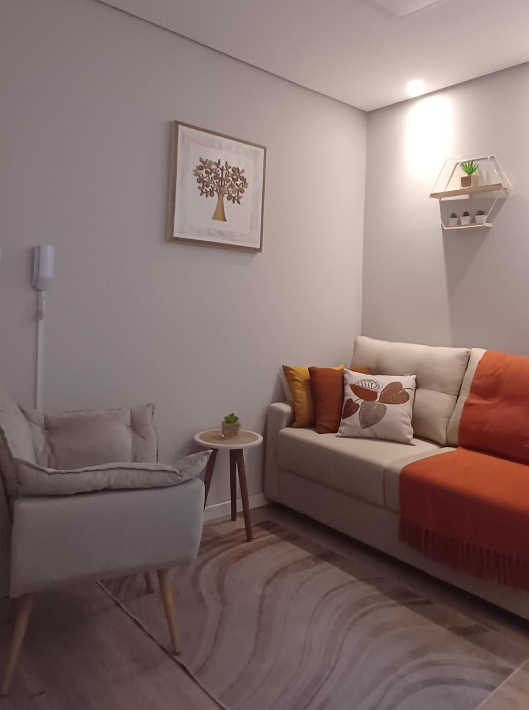

Sentir
Reconhecer e acolher as emoções.
Descubra uma nova forma de olhar para si mesmo.
Com base na Psicologia Junguiana, ofereço um acolhimento humanizado para crianças, adolescentes e adultos. Vamos juntos ressignificar emoções e alcançar equilíbrio emocional.
Sou Carla Herrera, psicóloga formada pela UMESP em 1997. Ao longo dos anos, dediquei-me à relação entre psique e corpo, atuando em áreas como educação infantil, gestão de pessoas e hoje, com foco na clínica psicológica.
Com especialização em Gestão de Pessoas e formação em Clínica Junguiana pelo Instituto Sedes Sapientiae, minha missão é promover o autoconhecimento e alívio do sofrimento emocional em um ambiente de confiança, ética e empatia.
Vamos trabalhar juntos para transformar suas emoções!
Orientada pela abordagem Analítica Junguiana, busco compreender a psique humana a partir de várias dimensões — racional, emocional, espiritual e simbólica — sendo especialmente eficaz no tratamento de conflitos internos, no desenvolvimento da personalidade e nos mais variados adoecimentos mentais.
Você já se sentiu desconectado em algum momento de sua vida? Estou aqui para ajudá-lo(a) a transformar seus problemas e desafios em potência, possibilitando uma vida mais significativa. Auxilio meus pacientes no resgate de sua essência, promovendo o autoconhecimento e o alívio do sofrimento mental. Juntos, buscamos a ressignificação de emoções dolorosas ou traumáticas para encontrar novas maneiras de olhar a si mesmo, com acolhimento humanizado baseado na ética, sigilo e confiança.
Te ajudo a transformar dores e caos em potência para uma vida significativa. Aqui começa sua jornada de equilíbrio e bem-estar. Venha comigo...
Meu trabalho terapêutico se baseia em quatro pilares fundamentais. Acredito que esses elementos formam um ciclo essencial dentro de nós, ajudando a nos conectar com nossa essência. Quando conseguimos equilibrar esses aspectos, abrimos caminho para novas formas de perceber a vida, promovendo mais autoconhecimento, harmonia e força para enfrentar desafios.
Reconhecer e acolher as emoções.
Compreender padrões e sentidos.
Expressar-se com verdade e clareza.
Mover-se rumo à transformação.
A Teoria Junguiana ou Analítica é baseada nas ideias do psiquiatra suíço Carl Gustav Jung. Ela busca integrar os aspectos conscientes e inconscientes da psique, com o objetivo de promover o autoconhecimento, a cura emocional e o nosso desenvolvimento integral.
Jung acreditava que o inconsciente tem um papel fundamental em moldar nossos pensamentos, emoções e comportamentos. O processo terapêutico envolve a exploração e compreensão desses elementos inconscientes: os complexos, os arquétipos, os sonhos, a sombra, o inconsciente coletivo e o simbolismo.
Ao trazer esses conteúdos para a consciência, a pessoa pode se tornar mais inteira e alcançar um estado de equilíbrio — o que ele chamava de "individuação". A individuação é o processo pelo qual uma pessoa se torna verdadeiramente ela mesma, unindo os opostos da psique: consciente e inconsciente, ego e sombra, anima e animus, masculino e feminino, vida e morte.

Não somos aquilo que nos acontece, somos aquilo que escolhemos nos tornar.— Inspirado em C. G. Jung
Toque em cada tema para compreender melhor como a terapia pode apoiar você.
A ansiedade pode ser desencadeada por preocupações excessivas, medos irracionais e dificuldades em lidar com incertezas. Pode se manifestar como ansiedade generalizada, crises de pânico, fobias e TOC. No tratamento, trabalhamos o reconhecimento dos gatilhos emocionais, a regulação das emoções e estratégias para lidar com o medo e a insegurança de forma mais saudável.
A chave para o crescimento pessoal e emocional. Envolve compreender as próprias emoções, reconhecer padrões de comportamento e se conectar com desejos e necessidades. A psicoterapia aprofunda essa jornada, ajudando a tomar decisões mais alinhadas com a essência.
Relações abusivas envolvem controle e desrespeito, deixando marcas na autoestima. Identificar esses padrões e sair do ciclo é fundamental; o suporte terapêutico ajuda a resgatar a confiança e a liberdade emocional.
O luto não se limita à perda de alguém querido, mas também a mudanças de vida, rompimentos e transições. Com o devido acolhimento, esse processo pode se transformar em oportunidade de ressignificação e crescimento.
Conflitos surgem por dificuldades de expressão, insegurança, traumas passados ou padrões disfuncionais. A terapia ajuda a compreender essas dinâmicas, melhorar a comunicação e fortalecer os vínculos de forma mais consciente.
Ligada à sensação de estagnação, comparação excessiva ou falta de propósito. A terapia traz clareza sobre as mudanças possíveis para uma vida mais significativa.
Medos intensos podem indicar traumas ou inseguranças não resolvidas. O autoconhecimento ajuda a construir uma relação mais equilibrada com os próprios sentimentos.
A insônia e outros transtornos do sono podem ser causados por estresse, ansiedade, hábitos ruins de sono e condições médicas. No tratamento, trabalhamos estratégias para melhorar a higiene do sono, reduzir o estresse e promover um descanso mais profundo e reparador.
Corpo e mente estão profundamente conectados. Emoções reprimidas e estresse acumulado podem se manifestar como dores crônicas, problemas gastrointestinais, fadiga e alergias. A terapia ajuda a compreender essas manifestações e a expressar emoções de forma mais saudável.
A baixa autoestima se manifesta como insegurança, medo de exclusão e autocrítica excessiva. Está associada a experiências da infância, comparações sociais ou padrões exigentes. A terapia fortalece a autoimagem e a confiança pessoal.
Mais que tristeza, é um estado prolongado de desânimo que afeta energia, pensamento e motivação. A terapia ajuda a ressignificar dores, entender padrões de pensamento que perpetuam o sofrimento e restaurar o prazer e o sentido na vida.
A desconexão de valores e propósitos gera angústia, mas também é oportunidade de transformação. A terapia ajuda a encontrar novos caminhos e reconectar com os próprios sonhos.
A necessidade constante de aprovação leva a vínculos desequilibrados. A terapia fortalece a individualidade, a autonomia emocional e o amor-próprio.
Eventos impactantes deixam marcas no emocional e no comportamento, manifestando-se como ansiedade, bloqueios ou dificuldades nos relacionamentos. O trabalho terapêutico promove a cura e a segurança emocional.
Ações educativas sobre saúde mental, autocuidado e prevenção em empresas, escolas e instituições.
Atendimento personalizado para autoconhecimento, gestão emocional e enfrentamento de desafios pessoais.
Melhora da comunicação, do vínculo afetivo e resolução de conflitos no relacionamento.
Espaço de troca, apoio e fortalecimento emocional entre pessoas com vivências semelhantes.
Apoio emocional e comportamental adaptado ao desenvolvimento de crianças e adolescentes.
Atendimento online para adaptação, identidade e bem-estar emocional fora do país.
Avaliação emocional pré-cirurgia bariátrica ou vasectomia, garantindo preparo e clareza emocional.
Realização de avaliações psicológicas para emissão de laudos, pareceres e documentos técnicos.

A única maneira de lidar com esse mundo é se transformar no melhor de você mesmo.
Ao longo do processo terapêutico, além de ressignificar traumas, dores emocionais e conflitos internos, você se conecta com seu "eu" de forma mais profunda, compreendendo as dinâmicas internas que influenciam emoções, comportamentos e escolhas.
Essa conexão com a essência facilita o resgate de aspectos do inconsciente que podem estar impedindo seu crescimento. Com isso, você aprende a viver de maneira mais autêntica e alinhada com seus valores, desejos e propósitos.
Ofereço um ambiente seguro e acolhedor para explorar e compreender seus processos internos. A terapia Junguiana é um caminho profundo de autotransformação, em que cada passo traz você mais perto de sua verdadeira essência e de uma vida mais plena.
Se você enfrenta problemas emocionais, comportamentais ou causados por estresse, ansiedade, tristeza ou traumas, a terapia pode ser útil. Se sentir que suas emoções ou pensamentos afetam sua qualidade de vida, buscar terapia pode ser uma boa ideia.
Varia conforme a abordagem e as necessidades. Geralmente há uma conversa inicial para entender desafios e objetivos; ao longo das sessões, exploramos sentimentos, pensamentos e comportamentos, com ferramentas para lidar com as questões. As sessões podem envolver conversas ou atividades práticas.
Não é uma "cura" instantânea, mas um processo de aprendizagem e autoconhecimento. O tempo depende do tipo de problema, da sua disposição e da frequência das sessões. Os resultados variam de pessoa para pessoa.
Não há número fixo. Depende das suas necessidades, objetivos e progresso. Algumas pessoas melhoram em semanas, outras precisam de meses. O plano é ajustado com você.
Não. É para qualquer pessoa que queira trabalhar aspectos emocionais e psicológicos da vida, mesmo sem diagnóstico — relacionamentos, estresse, autoconfiança e muito mais.
Sim. O sigilo é uma das bases da terapia. Tudo é confidencial, exceto em casos de risco iminente à vida do paciente ou de terceiros.
É normal sentir desconforto ao abordar questões difíceis. Mas, se não houver boa combinação, vale conversar sobre isso ou procurar outro profissional. O vínculo terapêutico é fundamental.
Sim, desde que haja conforto e um ambiente tranquilo. Muitas pessoas preferem o online pela conveniência. O processo e as técnicas são os mesmos.
Sim. A combinação de terapia e medicação é frequentemente recomendada para transtornos como depressão ou ansiedade. Terapeuta e psiquiatra podem trabalhar em conjunto.
Sim, há pacote mensal (4 ou 5 sessões adiantadas, dependendo do mês), com desconto para atendimentos regulares.
Não, mas se seu plano oferecer reembolso, com a nota fiscal e pedido médico com CID é possível solicitar ao convênio ou seguro saúde.
Por transferência bancária ou PIX. Após o pagamento você recebe nota fiscal ou recibo.
Na maioria dos casos, sim. A política de cancelamento é informada na primeira sessão. Para remarcar, é necessário avisar com 24h de antecedência.